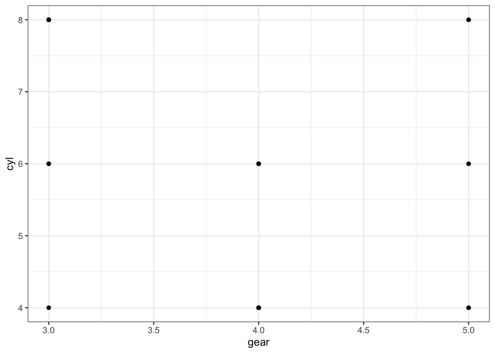
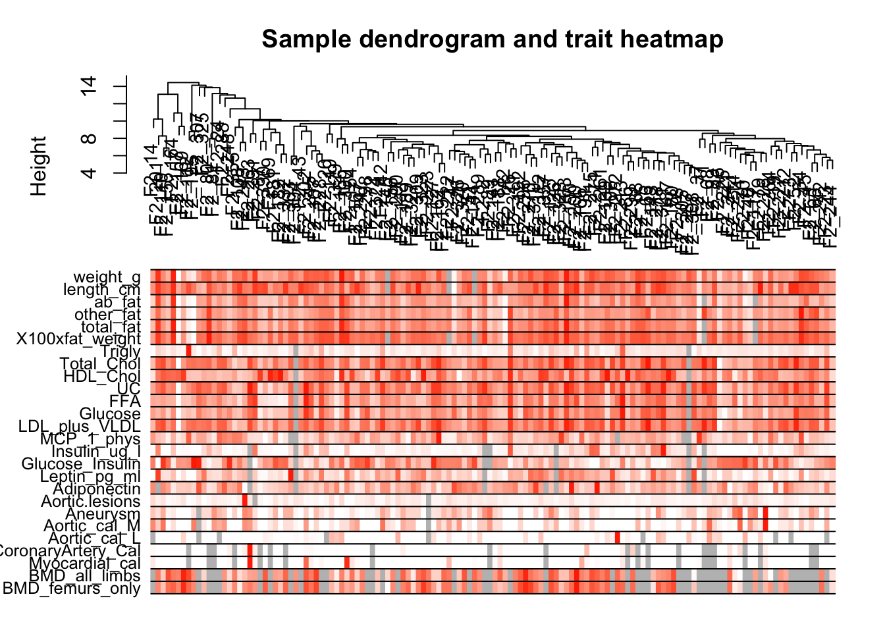
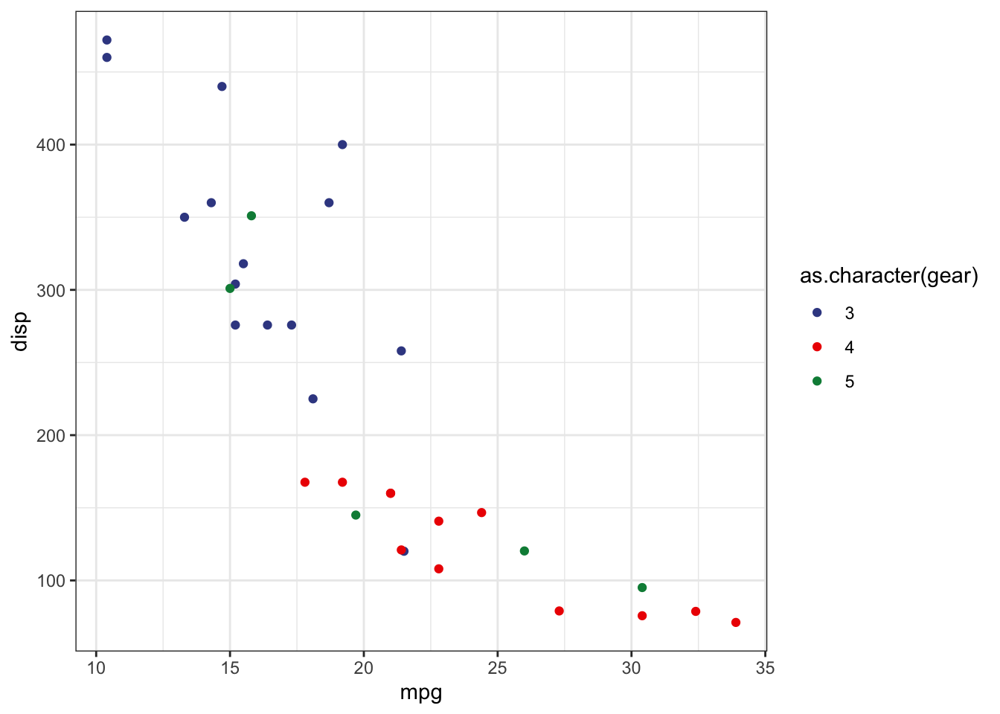
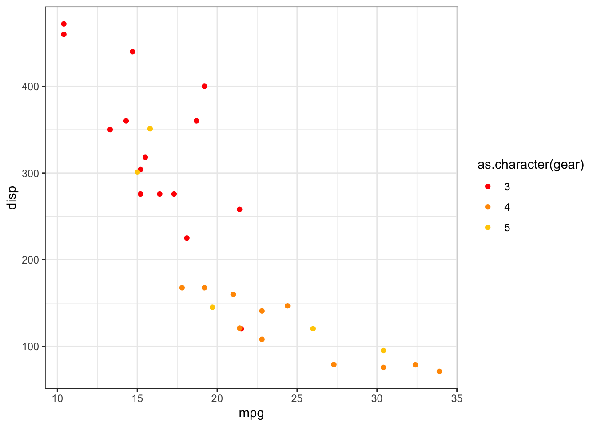
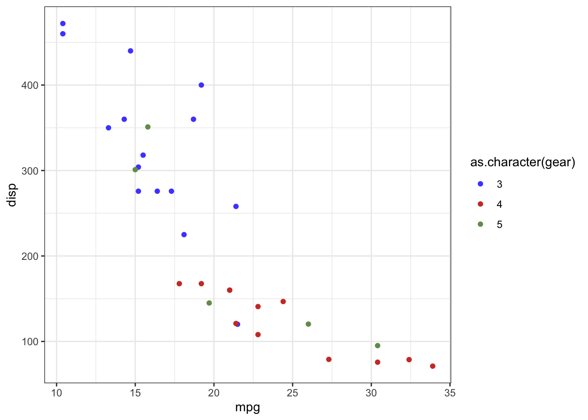

Chapter 2 Rmarkdown
Rmarkdown是Rstudio公司出品的.所有markdown的语法都支持.但是加入了很多强大的功能,因此可以做更多原生markdown无法完成的任务.成为数据分析以及报告自动化和重复化领域一个非常常用的工具.
可以参考下面的书,是rmarkdown的作者Yihui Xie写的.
https://bookdown.org/yihui/rmarkdown/installation.html
也可以查看这个视频简介.
What is R Markdown? from RStudio, Inc. on Vimeo.
2.1 安装
需要安装R和Rstudio.
如果想要转换为PDF格式,需要安装LaTex.
2.2 Rmarkdown结构
Rmarkdown可以分为三部分,分别是YAML, 文本部分以及代码块.
- YAML
YAML在每个rmakdown文件的最开头,定义了Markdown文件的很多性质.YAML是指YAin’t Markup Language, https://en.wikipedia.org/wiki/YAML.
YAML用---包围起来.
- 文本部分
YAML下面就是文本部分,其实也就是Markdown.
- 代码块
在Rmarkdown中,可以插入可以执行的代码块,不近包括R,还包括pyton,SQL等等.

上图显示的就是一个完整的Rmarkdown文件.
2.3 YAML
YAML是在Rmakdown中控制很多内容的部分.通过参数设置,可以控制比如输入格式,输出主题等等.
2.4 R代码块
R代码块的格式为:
可以看到,跟markdown代码块唯一的不同就是需要使用{r}来定义该代码块为R语言.除此之外,可以通过在大括号中设置一系列的参数,来控制代码块的输出.包括文本输出,图片输出以及表格输出等.
比如,可以通过设置result = 'hide'从而使文本结果不输出.也可以通过设置fig.width和fig.height来控制输出图片的宽度和高度.
另外还可以通过eval参数(evaulate)来控制代码块是否执行,如果设置为FALSE,则代码块不会执行.
比如:
下面这段代码就会执行,并输出结果.
```{r, eval = TRUE}
library(ggplot2)
ggplot(mtcars, aes(x = mpg, y = wt,
color = gear)) +
geom_point() + theme_bw()
```
而这段代码则不会执行
2.5 代码块参数 (Chunk options)
代码块有非常多的参数(chunk options),常用的总结如下,完整的可以在yihui xie的博客中.
https://yihui.org/knitr/options/
2.5.1 代码是否执行
eval:设置为TRUE或者FALSE来控制代码块是否执行.
###文本输出结果
echo:设置为TRUE或者FALSE,控制代码块是否显示在最终的渲染结果中.results:markup:mark up the results using the output hook, e.g. put results in a special LaTeX environment.asis:将R原始结果输出到最终文本中.hide:隐藏R执行结果,但是对error,message和warning没有作用.
collapse:设置为TRUE或者FALSE.用来控制文本输出结果是否和代码块混在一起.warning:设置为TRUE或者FALSE.如果代码执行,是否显示其中的warning信息.error:设置为TRUE或者FALSE.如果设置为TRUE,即使代码执行出现错误,仍然会输出渲染结果,如果设置为FALSE,代码执行错误,则渲染也会出错,不会在继续输出结果.‘message’: 设置为TRUE或者FALSE.代码执行时是否输出message信息.
include:是否将代码输出结果显示在最终的渲染输出文本中.
显示代码和输出结果:
```{r, eval = TRUE, include = TRUE}
library(ggplot2)
library(tidyverse)
mtcars %>%
ggplot(aes(x = gear, cyl)) +
geom_point() +
theme_bw()
```library(ggplot2)
library(tidyverse)
mtcars %>%
ggplot(aes(x = gear, cyl)) +
geom_point() +
theme_bw()
显示代码不显示输出结果:
```{r, eval = TRUE, include = FALSE}
library(ggplot2)
library(tidyverse)
mtcars %>%
ggplot(aes(x = gear, cyl)) +
geom_point() +
theme_bw()
```strip.white:设置为TRUE或者FALSE.是否输出在最终输出渲染结果中代码块上下的白线.
2.5.2 代码控制 (code decoration)
tidy:TRUE:使用formatR对代码格式进行整理.FALSE:保持原格式.styler:使用styler包对代码格式进行整理.
comment:默认为##,表示对于R代码输出的文本结果前面会有##进行注释.highlight:逻辑值.是否对代码进行高亮.
2.5.3 缓冲 (cache)
cache:逻辑值.是否需要缓冲代码块运行结果,对于代码运行时间比较长的rmakdown文件,可以设置为TRUE,这样重新渲染的时候,会减少运行时间.
cache.path:默认为’cache/’,设置如果缓冲为TRUE时,缓冲结果存储的文件夹位置.
2.5.4 图像控制(plot)
fig.path:默认为’figure/’,用来设置生成figure的存储位置.fig.show:如何显示plot.asis: plot在产生他们的代码后面.hold:所有代码产生的图片都放在一个完整的代码块之后.animate: 将所有产生的图片合成一个动画图片.hide:产生所有图片,但是并不展示.
```{r, eval = TRUE, fig.show = 'asis'}
library(ggplot2)
library(tidyverse)
library(ggsci)
#plot1
mtcars %>%
ggplot(aes(x = mpg, y = disp, color = as.character(gear))) +
geom_point() +
ggsci::scale_color_aaas() +
theme_bw()
#plot2
mtcars %>%
ggplot(aes(x = mpg, y = disp, color = as.character(gear))) +
geom_point() +
ggsci::scale_color_ucscgb() +
theme_bw()
#plot3
mtcars %>%
ggplot(aes(x = mpg, y = disp, color = as.character(gear))) +
geom_point() +
ggsci::scale_color_igv() +
theme_bw()
```
```{r, eval = TRUE, fig.show = 'hold'}
library(ggplot2)
library(tidyverse)
library(ggsci)
#plot1
mtcars %>%
ggplot(aes(x = mpg, y = disp, color = as.character(gear))) +
geom_point() +
ggsci::scale_color_aaas() +
theme_bw()
#plot2
mtcars %>%
ggplot(aes(x = mpg, y = disp, color = as.character(gear))) +
geom_point() +
ggsci::scale_color_ucscgb() +
theme_bw()
#plot3
mtcars %>%
ggplot(aes(x = mpg, y = disp, color = as.character(gear))) +
geom_point() +
ggsci::scale_color_igv() +
theme_bw()
```


```{r, eval = TRUE, fig.show = 'animate'}
library(ggplot2)
library(tidyverse)
library(ggsci)
#plot1
mtcars %>%
ggplot(aes(x = mpg, y = disp, color = as.character(gear))) +
geom_point() +
ggsci::scale_color_aaas() +
theme_bw()
#plot2
mtcars %>%
ggplot(aes(x = mpg, y = disp, color = as.character(gear))) +
geom_point() +
ggsci::scale_color_ucscgb() +
theme_bw()
#plot3
mtcars %>%
ggplot(aes(x = mpg, y = disp, color = as.character(gear))) +
geom_point() +
ggsci::scale_color_igv() +
theme_bw()
```dpi:输出图片dpi,默认72.(dpi * inches = pixels)fig.width和fig.height:输出图片宽度和高度,默认为7(单位英寸).fig.asp:图片的高宽比.默认为NULL.如果设置为数值,比如设置为0.7.则fig.height会被覆盖,然后设置为fig.width*fig.asp.out.width和out.height:默认为NULL.可以设置为100%,这样在最终的渲染结果中就是和页面宽度一致.fig.align:图片的align位置.默认为left,可以为right或者center.fig.cap:图片标题.设置为NA或者NULL,则没有.fig.subcap:图片副标题.
2.6 全局代码块参数
如果某些代码块参数在全局中都是一样的,可以在全局进行设置.
在YAML下以及所有的markdown文本之上,插入下列代码块.
使用的是knitr包中的opts_chunk$set()函数.可以将比较常见常用的代码块设置在这里进行设置.这里就是全局的设置.
2.7 具体问题的cookbook
- 输出两幅图,并且并列排布
结合代码块参数fig.show(设置为hold)和out.width(设置为50%).
```{r, eval = TRUE, fig.show = 'hold', out.width = '50%'}
library(ggplot2)
library(tidyverse)
library(ggsci)
#plot1
mtcars %>%
ggplot(aes(x = mpg, y = disp, color = as.character(gear))) +
geom_point() +
ggsci::scale_color_aaas() +
theme_bw()
#plot2
mtcars %>%
ggplot(aes(x = mpg, y = disp, color = as.character(gear))) +
geom_point() +
ggsci::scale_color_ucscgb() +
theme_bw()
```

2.8 Rmarkdown特有语法
Rmarkdown相比markdown来说,因为可以直接运行代码,因此有一些特有的语法,比如插入图片等.
2.8.1 图片 (image)
使用knitr::include_graphics()函数可以直接插入图片,然后使用代码块参数可以对图片进行设置,宽度高度,对齐等等.
```{r, eval = TRUE, fig.show = 'hold', out.width = '50%', fig.align = 'center', fig.cap = "小涛"}
knitr::include_graphics('images/Screen Shot 2020-03-13 at 10.48.36 PM.png')
```
Figure 2.1: 小涛
2.8.2 表格 (Table)
knitr::ktable()函数
| Sepal.Length | Sepal.Width | Petal.Length | Petal.Width | Species |
|---|---|---|---|---|
| 5.1 | 3.5 | 1.4 | 0.2 | setosa |
| 4.9 | 3.0 | 1.4 | 0.2 | setosa |
| 4.7 | 3.2 | 1.3 | 0.2 | setosa |
| 4.6 | 3.1 | 1.5 | 0.2 | setosa |
| 5.0 | 3.6 | 1.4 | 0.2 | setosa |
该函数又很多参数可以用来控制输出表格的格式,具体的可以参考帮助文档.也可以参考下面的帖子:
https://cran.r-project.org/web/packages/kableExtra/vignettes/awesome_table_in_html.html
2.9 输出格式
2.9.1 HTML格式
Markdown最最开始就是就是为输出为HTML格式涉及的.在Rmarkdown中,如果想要输出位HTML格式,需要在YAML中将output设置为html_document即可.
- 目录(Table of contents)
想要给文章设置目录,可以在html_document下设置toc参数,同时也可以设置toc_depth来设置几级目录.
比如下面的例子:
如果想要让目录浮在页面上,可以设置toc_float参数.比如下面的例子:
同时toc_float参数还有自己的参数可以进行设置.
collapsed:逻辑值.控制目录是否可以进行折叠.smooth_scroll:逻辑值.controls whether page scrolls are animated when TOC items are navigated to via mouse clicks.
例如:
---
title: "Habits"
output:
html_document:
toc: true
toc_float:
collapsed: false
smooth_scroll: false
---- 标题编号(Section numbering)
可以使用number_sections参数来控制标题的编号.
例如:
- 外观和风格
有几个参数可以来控制HTML document的外观.
theme参数可以用来控制HTML document的外观和主题.来自于Bootswatch.可以选择的主题包括以下几项:default,cerulean,journal,flatly,darkly,readable,spacelab,united,cosmo,lumen,paper,sandstone,simplex, andyeti.可以点击到网站中去查看几种主题的外观.highlight用来控制语法高亮的风格.包括以下几种:default,tango,pygments,kate,monochrome,espresso,zenburn,haddock,breezedark, andtextmate.
- 表格打印
可以使用df_print参数来控制表格打印的风格.在R代码块中的数据框直接显示的风格.
default: 使用R中print.data.frame方法.kable: 使用knitr::kable函数.tibble: 使用tibble::print.tbl_df函数,paged:使用rmarkdown::paged_table函数.
---
title: "Motor Trend Car Road Tests"
output:
html_document:
df_print: default
---
```{r}
mtcars
```显示结果如下:

如果设置为kable:

如果设置为paged:

- 代码折叠
可以通过设置code_folding为hide,这样所有的代码默认都是折叠的,然后用户可以通过点击按钮显示某个代码块.
- 其他一些高级设置
- 通过使用
includes参数,可以在rmarkdown的某些位置加入一些自己设计好的HTML元素.
---
title: "Habits"
output:
html_document:
includes:
in_header: header.html
before_body: doc_prefix.html
after_body: doc_suffix.html
---- 自定义主题
如果对HTML比较熟悉,可以使用自己的主题.
2.9.2 PDF格式
Rmarkdown也可以输出为PDF格式的文档.设置output为pdf_document.
PDF格式的目录,图片设置,数据框打印,语法高亮都跟HTML相同.
2.9.3 Word格式
也可以输出为word格式,设置output为word_document.
word的格式可以使用默认的格式,当然也可以自己进行设置.设置好格式之后,使用reference_docx参数进行设置.
如何设置格式文件,可以参考下面文章:
https://rmarkdown.rstudio.com/articles_docx.html
或者看下面的视频:
Create A MS Word Template for R Markdown from Yihui Xie on Vimeo.